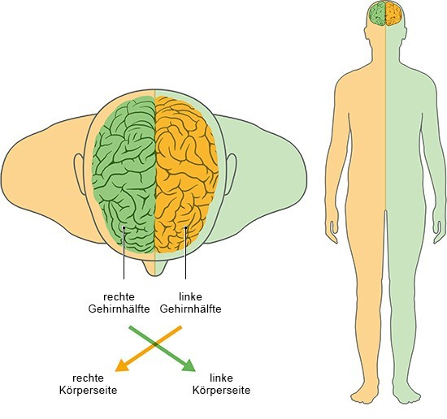

Genirn
Das Gehirn ist eines der wichtigsten Organe. Es ist nicht nur für die Steuerung sämtlicher lebensnotwendigen Körperfunktionen verantwortlich, sondern ermöglicht ebenfalls das Denken und Erinnern. Darüber hinaus ist es das Zentrum des emotionalen Erlebens und hat dadurch einen großen Einfluss auf das Leben eines jeden Menschen.
Bedeutung und Funktion des Gehirns
In der Regel verfügt das Gehirn über ein Gewicht von durchschnittlich 1,5 Kilogramm. Das Volumen ist dabei vorrangig von der Körpergröße und dem Geschlecht abhängig. Einen direkten Zusammenhang zwischen dem Gewicht des Gehirns und der Intelligenz des Menschen gibt es jedoch nicht. Aufgrund seiner hohen Bedeutung bedarf es einen besonderen Schutz vor Verletzungen und Erschütterungen. Aus diesem Grund sichern es sowohl zahlreiche Puffer-Strukturen als auch ein dicker Schädelknochen. Dabei fungieren die Puffer-Strukturen als effektiver Stoßdämpfer.
Aufbau des Gehirns
Das menschliche Gehirn ist eines der komplexesten organischen Strukturen. Es besteht aus zwei unterschiedlichen Hälften, die über einen sogenannten Balken verbunden sind. Die Medizin bezeichnet diese in der Regel als Hemisphären. Darüber hinaus unterteilt die Medizin das Gehirn grob in vier wesentliche Bereiche. Dabei handelt es sich um:
- Großhirn
- Kleinhirn
- Zwischenhirn
- Hirnstamm
Aufgaben des Gehirns
Das Großhirn besteht aus einer rechten und einer linken Gehirnhälfte. Beide sind durch ein dickes Bündel aus Nervenfasern verbunden, dem Balken. Jede Gehirnhälfte besteht wiederum aus sechs Bereichen (Lappen) mit unterschiedlichen Funktionen. Das Großhirn kontrolliert Bewegungen und verarbeitet Sinneseindrücke von außen. Hier entstehen bewusste und unbewusste Handlungen und Gefühle. Es ist außerdem für Sprache und Hören, Intelligenz und Gedächtnis verantwortlich. Die beiden Gehirnhälften haben zum Teil unterschiedliche Funktionen: Während die linke Hälfte bei den meisten Menschen auf Sprache und abstraktes Denken spezialisiert ist, kommt die rechte in der Regel dann zum Einsatz, wenn es um räumliches Denken oder bildhafte Zusammenhänge geht. Die rechte Gehirnhälfte steuert die linke Körperseite, die linke Hälfte ist für die rechte Seite zuständig. Diese Überkreuzung führt dazu, dass zum Beispiel bei einem Schlaganfall eine Schädigung der linken Gehirnhälfte Lähmungen auf der rechten Körperseite verursachen kann.
Im Großhirn ist die Hirnrinde der linken Gehirnhälfte für die Sprache verantwortlich. Die Hirnrinde der rechten Gehirnhälfte vermittelt dem Gehirn die räumliche Stellung des Körpers – beispielsweise, wo sich der Fuß gerade befindet. Der Thalamus teilt dem Großhirn unter anderem Sinneseindrücke der Haut, der Augen und der Ohren mit. Der Hypothalamus reguliert zum Beispiel Hunger, Durst und Schlaf und kontrolliert zusammen mit der Hirnanhangsdrüse (Hypophyse) den Hormonhaushalt. Der Hirnstamm schaltet Informationen vom Gehirn zum Kleinhirn und dem Rückenmark um und kontrolliert Bewegungen der Augen sowie die Mimik. Er reguliert außerdem lebenswichtige Funktionen wie Atmung, Blutdruck und Herzschlag. Das Kleinhirn koordiniert die Bewegungen und ist für das Gleichgewicht verantwortlich.
Wie funktioniert die Blutversorgung des Gehirns?
Das Gehirn muss ständig mit genügend Sauerstoff, Glukose und weiteren Nährstoffen versorgt werden. Deshalb ist es besonders gut durchblutet. Jede Gehirnhälfte wird von drei Arterien mit Blut versorgt:
- Die vordere Hirnarterie (Arteria cerebri anterior) versorgt das Gewebe hinter der Stirn und im Bereich des Scheitels.
- Die mittlere Hirnarterie (Arteria cerebri media) ist für die Seite und weiter innen liegende Gehirnbereiche wichtig. Die vordere und die mittlere Hirnarterie zweigen von der inneren Halsschlagader ab.
- Die hintere Hirnarterie (Arteria cerebri posterior) versorgt den Hinterkopf und den unteren Bereich des Gehirns sowie das Kleinhirn. Sie wird mit Blut aus den Wirbelarterien gespeist.
Bevor die drei Arterien in „ihre“ Hirnregionen ziehen und sich dort in kleinere Äste verzweigen, liegen sie nahe beieinander unterhalb des Gehirns. Hier sind sie über kleinere Blutgefäße miteinander verbunden – ähnlich wie in einem Kreisverkehr. Auch an weiter entfernten Stellen gibt es Verbindungswege zwischen den einzelnen Arterien. Das hat den Vorteil, dass Durchblutungsstörungen im Gehirn bis zu einem gewissen Grad ausgeglichen werden können: Wenn zum Beispiel ein Arterienast allmählich immer enger wird, kann über diese „Umwege“ (sogenannte Kollateralen) trotzdem Blut in den betroffenen Hirnbereich fließen. Die feinsten Aufzweigungen (Kapillaren) der Hirnarterien geben zwar Sauerstoff und Nährstoffe aus dem Blut an die Gehirnzellen ab – für andere Stoffe sind sie jedoch weniger durchlässig als vergleichbare Blutgefäße im übrigen Körper. Fachleute nennen diese Eigenschaft „Blut-Hirn-Schranke“. Sie kann das empfindliche Gehirn zum Beispiel vor im Blut gelösten Schadstoffen schützen. „Verbrauchtes“ – also sauerstoffarmes – Blut wird über die Gehirnvenen abtransportiert. Sie leiten es in größere Blutgefäße, die sogenannten Sinusse. Die Sinuswände sind durch harte Hirnhaut verstärkt, die die Gefäße gleichzeitig aufspannen. Dadurch werden sie dauerhaft offengehalten, und das Blut kann immer ungehindert in die Halsvenen abfließen.
Wikipedia lesen